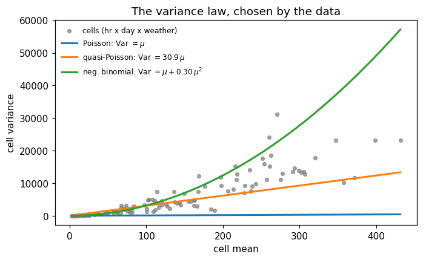
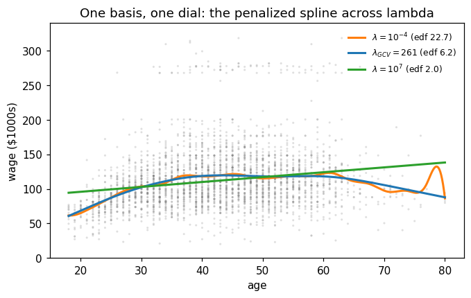

This notebook runs on Colab as-is. The badge link above and the GITHUB_RAW line in the setup cell already point to this repository, so everything installs and loads automatically.
Advanced Module A4 — GLMs and Splines¶
Setup¶
Run this cell once. The ISLP package can be installed with pip install ISLP. As an alternative, the same data sets are available as CSVs in the workspace’s ALL CSV FILES - 2nd Edition folder.
Google Colab: this notebook also runs on Colab out of the box — the setup cell below installs any missing packages and downloads the data automatically.
# --- Setup: runs locally AND on Google Colab --------------------------------
# Silence only the spurious 'encountered in matmul' RuntimeWarnings that the macOS
# Accelerate BLAS emits; real warnings (deprecations, model caveats) stay visible.
import warnings
warnings.filterwarnings('ignore', message='.*encountered in matmul', category=RuntimeWarning)
import importlib.util, os, subprocess, sys
IN_COLAB = 'google.colab' in sys.modules
def _ensure(pkg, import_name=None):
"""pip-install pkg (quietly) if its import is missing."""
if importlib.util.find_spec(import_name or pkg) is None:
subprocess.run([sys.executable, '-m', 'pip', 'install', '-q', pkg], check=False)
if IN_COLAB: # Colab ships numpy/pandas/sklearn/statsmodels; add course extras
for _pkg, _imp in [('ISLP', 'ISLP')]:
_ensure(_pkg, _imp)
import numpy as np
import pandas as pd
import matplotlib.pyplot as plt
rng = np.random.default_rng(2024)
plt.rcParams['figure.dpi'] = 110
try:
from ISLP import load_data
HAVE_ISLP = True
except ImportError:
HAVE_ISLP = False
print('ISLP not installed; using CSV / URL fallbacks.')
# Local CSV location (repo layout first, then legacy paths, then a data/ cache).
_CANDIDATES = ['../ALL CSV FILES - 2nd Edition',
'ALL CSV FILES - 2nd Edition',
'../../ALL CSV FILES - 2nd Edition',
'../../../ALL CSV FILES - 2nd Edition', 'data']
CSV = next((p for p in _CANDIDATES if os.path.isdir(p)), 'data')
# GITHUB_RAW lets a fresh Colab runtime fetch any
# CSV that is neither in ISLP nor already local (spaces in the folder -> %20).
GITHUB_RAW = ('https://raw.githubusercontent.com/ChrisW09/Quantitative-Research-Methods/main/'
'ALL%20CSV%20FILES%20-%202nd%20Edition')
# The four datasets NOT in the ISLP package -> load from the book's official
# site so the notebook works on a fresh Colab even before the repo is published.
KNOWN_URLS = {
'Advertising': 'https://www.statlearning.com/s/Advertising.csv',
'Heart': 'https://www.statlearning.com/s/Heart.csv',
'Income1': 'https://www.statlearning.com/s/Income1.csv',
'Income2': 'https://www.statlearning.com/s/Income2.csv',
}
def load(name, **read_csv_kwargs):
"""Load a course dataset. Order: ISLP package -> R datasets -> local CSV
-> official book URL -> your GitHub repo. Works locally and on Colab."""
if HAVE_ISLP:
try:
return load_data(name)
except Exception:
pass
if name == 'USArrests': # classic R dataset, not in ISLP
try:
import statsmodels.api as sm
return sm.datasets.get_rdataset('USArrests', 'datasets').data
except Exception:
pass
path = f'{CSV}/{name}.csv'
if os.path.exists(path): # running from the repo (local)
return pd.read_csv(path, **read_csv_kwargs)
remotes = ([KNOWN_URLS[name]] if name in KNOWN_URLS else []) + [f'{GITHUB_RAW}/{name}.csv']
for url in remotes: # fresh Colab: stream over https
try:
return pd.read_csv(url, **read_csv_kwargs)
except Exception:
continue
raise FileNotFoundError(
f"Could not load {name!r}. Put the CSV in '{CSV}/' or check your connection for the GITHUB_RAW fallback.")
ISLP not installed; using CSV / URL fallbacks.
2. The exponential family in one numeric check¶
The deck derives the Poisson as an exponential-family member with \(b(\theta) = e^\theta\), so \(b'(\theta) = \mu\) and \(b''(\theta) = \mu\): the variance equals the mean. A three-line simulation confirms the mean–variance law that the whole module turns on.
rng = np.random.default_rng(2024)
for mu in (2.0, 10.0, 50.0):
ysim = rng.poisson(mu, 100_000)
print(f'Poisson(mu={mu:5.1f}): mean {ysim.mean():7.3f} variance {ysim.var():7.3f}')
Poisson(mu= 2.0): mean 2.000 variance 1.993
Poisson(mu= 10.0): mean 9.988 variance 9.925
Poisson(mu= 50.0): mean 49.989 variance 49.894
Reading the output. Mean \(=\) variance, at every level — the Poisson “straitjacket”. Bernoulli (\(V(\mu) = \mu(1-\mu)\)) and Gaussian (\(V(\mu) = \sigma^2\), flat) are the other two members you already know from Chapters 4 and 3; each family fixes how spread follows the mean, which is exactly the second thing the linear model got wrong in Section 1.
4. Deviance, LRT and AIC¶
The deviance is the GLM’s residual sum of squares; differences of deviances between nested fits are likelihood-ratio statistics. Drop weathersit and test it.
red = smf.glm('bikers ~ C(hr) + temp + workingday', data=bike,
family=sm.families.Poisson()).fit()
LR = red.deviance - pois.deviance
q = red.df_resid - pois.df_resid
from scipy import stats
print(f'reduced deviance {red.deviance:.1f} full {pois.deviance:.1f}')
print(f'LR = {LR:.1f} on {q} df (chi2 95% critical value: {stats.chi2.ppf(0.95, q):.2f})')
print(f'AIC: full {pois.aic:.1f} reduced {red.aic:.1f}')
reduced deviance 287262.7 full 269005.9
LR = 18256.8 on 3 df (chi2 95% critical value: 7.81)
AIC: full 322101.7 reduced 340352.4
Reading the output. \(\text{LR} = 18{,}256.8 \gg 7.81\): weather adds explanatory power far beyond chance, given hour, temperature and day type. The AICs agree (\(322{,}101.7\) vs \(340{,}352.4\)). Two cautions from the deck: deviance differences are \(\chi^2\) only for nested models with fixed dispersion, and AICs are only comparable across models fitted to identical data.
5. Overdispersion: quasi-Poisson and negative binomial¶
The Poisson family forces \(\text{Var} = \mu\). Check it before believing any Poisson SE: the Pearson dispersion \(\hat\varphi = X^2/(n-p)\) should be near 1.
phi = pois.pearson_chi2 / pois.df_resid
print(f'Pearson X2 = {pois.pearson_chi2:.0f} -> dispersion phi_hat = {phi:.2f}'
f' (SEs must grow by sqrt(phi) = {np.sqrt(phi):.2f})')
# Observed cell variance vs cell mean (hr x day type x weather cells, n >= 20).
g = bike.groupby(['hr', 'workingday', 'weathersit'], observed=True)['bikers'].agg(['mean', 'var', 'count'])
g = g[g['count'] >= 20].dropna()
m = np.linspace(g['mean'].min(), g['mean'].max(), 300)
fig, ax = plt.subplots(figsize=(7, 4))
ax.scatter(g['mean'], g['var'], s=14, alpha=0.7, color='grey', label='cells (hr x day x weather)')
ax.plot(m, m, color='C0', lw=2, label=r'Poisson: Var $= \mu$')
ax.plot(m, phi*m, color='C1', lw=2, label=rf'quasi-Poisson: Var $= {phi:.1f}\,\mu$')
ax.plot(m, m + 0.3049*m**2, color='C2', lw=2, label=r'neg. binomial: Var $= \mu + 0.30\,\mu^2$')
ax.set(xlabel='cell mean', ylabel='cell variance', title='The variance law, chosen by the data')
ax.legend(frameon=False, fontsize=8)
plt.show()
Pearson X2 = 266229 -> dispersion phi_hat = 30.90 (SEs must grow by sqrt(phi) = 5.56)

# Fix 1 -- quasi-Poisson: same estimates, honest SEs (scale='X2').
quasi = smf.glm(form, data=bike, family=sm.families.Poisson()).fit(scale='X2')
# Fix 2 -- negative binomial: estimate alpha by ML, then fit the NB GLM.
nb_ml = smf.negativebinomial(form, data=bike).fit(disp=0, maxiter=1000) # NB2, alpha estimated
alpha = nb_ml.params['alpha']
nb = smf.glm(form, data=bike, family=sm.families.NegativeBinomial(alpha=alpha)).fit()
print(f'NB dispersion parameter alpha_hat = {alpha:.4f}')
rows = ['temp', 'workingday', 'C(weathersit)[T.light rain/snow]']
tab = pd.DataFrame({
'Poisson beta': pois.params[rows], 'Poisson SE': pois.bse[rows],
'quasi SE': quasi.bse[rows],
'NB beta': nb.params[rows], 'NB SE': nb.bse[rows],
})
print(tab.round(3).to_string())
print(f'\nAIC: Poisson {pois.aic:.0f} quasi-Poisson: undefined (no likelihood) NB {nb.aic:.0f}')
NB dispersion parameter alpha_hat = 0.3049
Poisson beta Poisson SE quasi SE NB beta NB SE
temp 1.567 0.005 0.026 1.893 0.032
workingday 0.002 0.002 0.011 -0.195 0.013
C(weathersit)[T.light rain/snow] -0.505 0.004 0.022 -0.538 0.022
AIC: Poisson 322102 quasi-Poisson: undefined (no likelihood) NB 90590
Reading the output. \(\hat\varphi = 30.9\) — the variance is \(31\times\) the Poisson claim, a categorical rejection. Quasi-Poisson keeps every \(\hat\beta\) and multiplies SEs by \(\sqrt{30.9} = 5.56\); it has no likelihood, hence no AIC. The negative binomial refits: its quadratic variance law wins the AIC contest by a mile (\(90{,}590\) vs \(322{,}102\) — legitimate, because both are genuine likelihoods for the same response). And note workingday: \(+0.002\) under Poisson, \(-0.195\) under NB — when two reasonable likelihoods disagree this much, the effect is heterogeneous across hours and belongs in an interaction or a GAM, not a single number.
6. Penalized splines on Wage¶
Chapter 7 chose knots; penalized splines make knots plentiful and put all structural choice into one dial: minimise \(\text{Deviance} + \lambda \int f''(t)^2\,dt\). The effective degrees of freedom \(\text{edf} = \text{tr}\,H(\lambda)\) measure how much was really fitted, and GCV chooses \(\lambda\) without refitting.
from scipy.interpolate import BSpline
Wage = load('Wage')
xa, yw = Wage['age'].to_numpy(float), Wage['wage'].to_numpy()
def bspline_design(x, xl, xr, nseg, deg=3):
"""P-spline design: equally spaced knots, cubic B-splines."""
dx = (xr - xl) / nseg
knots = np.arange(xl - deg*dx, xr + (deg + 1)*dx, dx)
K = len(knots) - deg - 1
B = np.empty((len(x), K))
for j in range(K):
c = np.zeros(K); c[j] = 1.0
B[:, j] = BSpline(knots, c, deg)(x)
return B, K
B, K = bspline_design(xa, xa.min(), xa.max(), nseg=20) # K = 23 basis functions
D2 = np.diff(np.eye(K), n=2, axis=0)
S = D2.T @ D2 # curvature penalty
def pspline_fit(lam):
A = B.T @ B + lam*S
beta = np.linalg.solve(A, B.T @ yw)
edf = np.trace(np.linalg.solve(A, B.T @ B))
rss = np.sum((yw - B @ beta)**2)
gcv = len(yw)*rss / (len(yw) - edf)**2
return beta, edf, gcv
lams = 10**np.linspace(-2, 8, 121)
edfs, gcvs = zip(*[pspline_fit(l)[1:] for l in lams])
best = int(np.argmin(gcvs))
print(f'K = {K} basis functions; GCV chooses lambda = {lams[best]:.0f}, edf = {edfs[best]:.1f}')
for lam in (1e-4, lams[best], 1e7):
_, edf, _ = pspline_fit(lam)
print(f' lambda = {lam:10.4g}: edf = {edf:5.1f}')
K = 23 basis functions; GCV chooses lambda = 261, edf = 6.2
lambda = 0.0001: edf = 22.7
lambda = 261: edf = 6.2
lambda = 1e+07: edf = 2.0
xg = np.linspace(xa.min(), xa.max(), 400)
Bg, _ = bspline_design(xg, xa.min(), xa.max(), nseg=20)
fig, ax = plt.subplots(figsize=(7, 4))
ax.scatter(xa, yw, s=4, alpha=0.25, color='grey', edgecolor='none')
for lam, col, lab in [(1e-4, 'C1', r'$\lambda=10^{-4}$ (edf 22.7)'),
(lams[best], 'C0', rf'$\lambda_{{GCV}}={lams[best]:.0f}$ (edf {edfs[best]:.1f})'),
(1e7, 'C2', r'$\lambda=10^{7}$ (edf 2.0)')]:
beta, _, _ = pspline_fit(lam)
ax.plot(xg, Bg @ beta, color=col, lw=2, label=lab)
ax.set(xlabel='age', ylabel='wage ($1000s)', ylim=(0, 340),
title='One basis, one dial: the penalized spline across lambda')
ax.legend(frameon=False, fontsize=8)
plt.show()

Reading the output. At \(\lambda = 10^{-4}\) the fit burns \(22.7\) edf and chases noise around age 78; at \(\lambda = 10^7\) it collapses to a straight line (\(2.0\) edf — the penalty’s null space) and misses the plateau. GCV picks \(\lambda = 261\), \(\text{edf} = 6.2\) — close to the df Chapter 7 found by CV for this very curve. Report edf, not \(\lambda\): \(\lambda\)’s scale depends on the basis, edf reads directly as “a curve worth \(6.2\) parameters”.
Lecture exercises — worked Python solutions¶
These are the [Python]-tagged exercises from the lecture slides, solved step by step; run them cell by cell and compare with the slide solutions. Data loads through the load() helper defined in the Setup cell, so every cell works locally and on Colab.
Extended Exercise A4.2 — Build and defend a count GAM [Python]¶
Task (from the slides). Using GLMGam with BSplines(df=[12, 6], degree=[3, 3]) on hr and temp, plus parametric workingday and weather dummies:
write down the model equation for \(\log\mu_i\) and say which parts are penalized;
the selected penalties give edf \(\approx 11\) (hr) and \(\approx 5\) (temp) — what would edf \(\approx 2\) for
temphave told you?from the fitted hour smooth, \(f(18) = 4.77\) and \(f(3) = 1.21\): compute the 6 p.m. vs 3 a.m. rate ratio;
the GAM’s weather coefficient is \(-0.569\) (light rain) vs the GLM’s \(-0.505\) — give one reason the estimates differ;
name the single most important robustness check before this model ships.
# (2)-(4): every number, recomputed from the Section 7 fit -----------------
print(f'edf hour {res.edf[npar:npar+11].sum():.1f}, edf temp {res.edf[npar+11:].sum():.1f}')
print(f'f(18) = {f18:.2f}, f(3) = {f3:.2f} -> rate ratio e^{f18-f3:.2f} = {np.exp(f18-f3):.0f}x')
print(f'GAM light rain {res.params["w_light"]:.3f} vs GLM {pois.params["C(weathersit)[T.light rain/snow]"]:.3f}')
# (5): the overdispersion audit applies to GAMs verbatim -------------------
mu_hat = res.fittedvalues
phi_gam = np.sum((bike.bikers - mu_hat)**2 / mu_hat) / (len(bike) - res.edf.sum())
print(f'GAM Pearson dispersion: {phi_gam:.1f} (still >> 1 — widen the uncertainty!)')
edf hour 11.0, edf temp 5.0
f(18) = 4.77, f(3) = 1.21 -> rate ratio e^3.56 = 35x
GAM light rain -0.569 vs GLM -0.505
GAM Pearson dispersion: 30.7 (still >> 1 — widen the uncertainty!)
Reading the output.
\(\log\mu_i = \beta_0 + f_1(\texttt{hr}_i) + f_2(\texttt{temp}_i) + \beta_w\,\texttt{workingday}_i + \gamma_1\texttt{cloudy}_i + \gamma_2\texttt{light}_i + \gamma_3\texttt{heavy}_i\) — only \(f_1\) and \(f_2\) are penalized (each with its own \(\alpha\)); the intercept, dummies and \(\beta_w\) are ordinary ML parameters.
edf \(\approx 2\) for
tempwould mean the penalty had shrunk the smooth to near-linearity — the data see no curvature, and the linear-temp GLM would have been adequate. The actual edf \(\approx 5\) says the bend (including the hot-weather dip) is real structure.\(e^{4.77 - 1.21} = e^{3.56} \approx 35\): holding temperature, weather and day type fixed, 6 p.m. carries about \(35\times\) the 3 a.m. count.
The two models adjust for temperature differently — the GLM forces a linear temp effect, the GAM lets it bend. Rainy hours are also cool hours, so when the temperature adjustment changes shape, the weather dummies absorb a different share of the rain–cold overlap. Coefficients of correlated regressors always move when a co-regressor’s functional form changes.
The overdispersion audit of the GAM itself: its Pearson dispersion is still \(\gg 1\), so shipping the \(35\times\) headline with Poisson bands would overstate certainty roughly \(5\)–\(6\)-fold. Flexible means do not repair broken variances — quasi rescaling or an NB-GAM before anything ships.
8. Exercises¶
Add an
hr × workingdayinteraction to the Poisson GLM of Section 3 and re-testworkingday. Does the heterogeneity story of Section 5 (positive at commutes, negative at night) show up in the coefficients?Refit Section 5’s negative binomial with
alphafixed at half and at double the ML estimate. How sensitive are the coefficients and their SEs?In Section 6, replace GCV with 10-fold cross-validation on the \(\lambda\) grid. Does the chosen edf change materially?
Fit the Section 7 GAM with
df=[24, 6]for the hour basis. Does more basis freedom bring the 17:00-vs-04:00 ratio closer to the dummy model’s \(55.4\times\), and what happens to the edf?